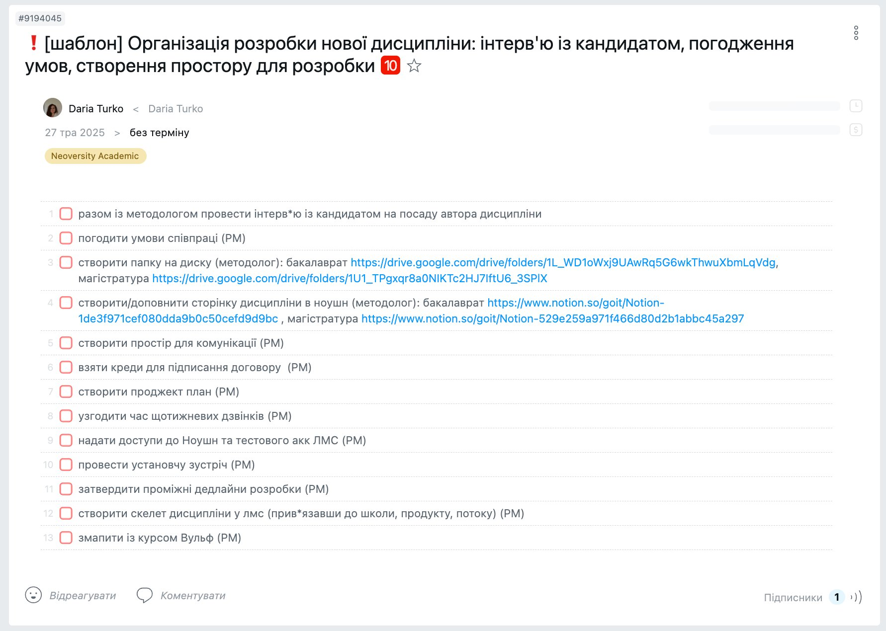
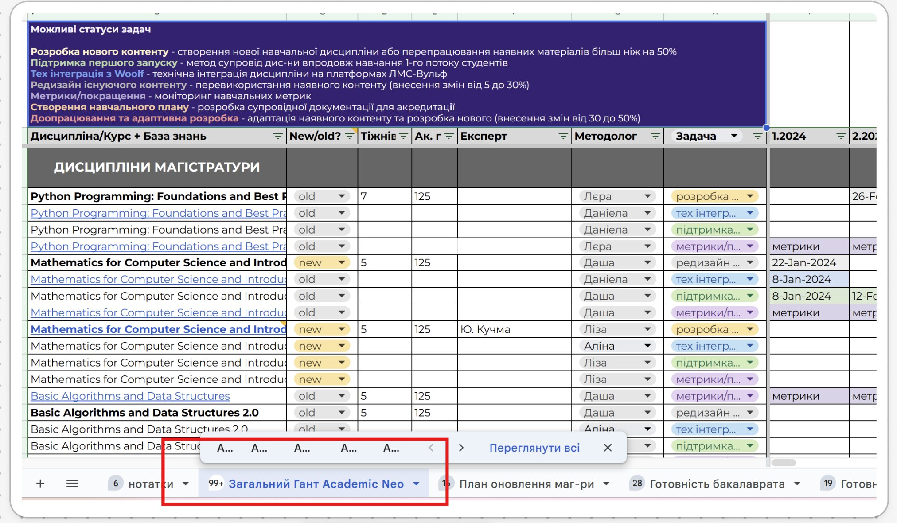
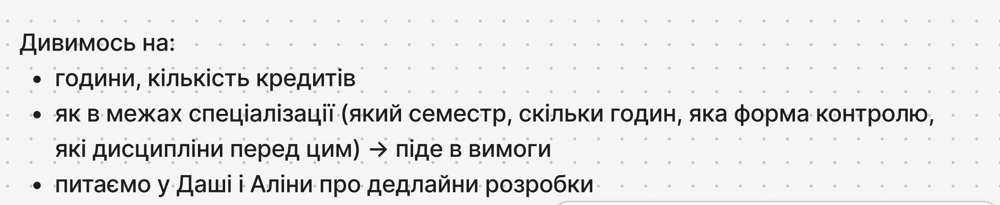
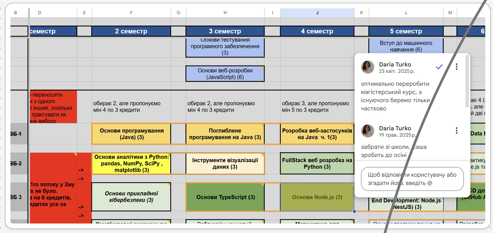

!
⚙️ Відкрити в Worksection
Чекліст Worksection для цієї фази
#9194045 · Організація розробки нової дисципліни

WS #9194045 · 13 пунктів · методолог відповідає за п.3 (папка Drive) і п.4 (сторінка Notion)
🎁
Артефакт фази
Сторінка дисципліни в Notion з заповненими вхідними даними + папка на Google Drive
Кроки — що робить методолог
1
Отримали дисципліну → переходимо до планування
▶
💡Без розуміння годин, кредитів і місця дисципліни в навчальному плані неможливо правильно оцінити обсяг роботи і не злетіти з дедлайном.

Загальний Гант Academic Neo — шукаємо дисципліну, дивимось на колонки

Що дивимось: години, кредити, семестр, форма контролю, пререквізити
2
Збираємо вимоги
▶
💡Вимоги — це основа всього. Якщо на старті не зрозуміти обмеження (форма контролю, пререквізити, місце в програмі), потім доведеться переробляти вже готовий контент.
- 2.1 — Сходити до Даші, спитати чи є вже якісь матеріали по цій дисципліні
- 2.2 — Забрати вимоги з таблиці спеціалізації, подивитись примітки
- 2.3 — Якщо є архів матеріалів — забрати: силабус, матеріали для живих занять

Таблиця спеціалізацій — семестри, кредити, примітки від Даші
3
Створюємо папку на Drive і сторінку в Notion
▶
💡Єдине місце зберігання всіх матеріалів з першого дня — гарантія того, що нічого не загубиться і команда завжди знає куди йти.
- В папці Drive Магістратура — створити підпапку для нової дисципліни
- В Notion — відкрити базу маг-ри і створити/доповнити сторінку дисципліни
📓 Структура сторінки в Notion — Вхідні дані
Вхідні дані
Дослідження ринку та конкурентів (за необхідності) — посилання, додає методолог
Програма
Форма контролю (іспит / залік / диф залік)
Наявність фін тестування
Кількість навчальних / аудиторних годин
Розподіл годин
► Наявні матеріали
► Необхідні пререквізити
► Зв'язок з попередніми та послідуючими курсами
► Інші особливості курсу
► Вимоги до автора курсу
Процес розробки
ОПП ІП3, ОПП ШІПІ